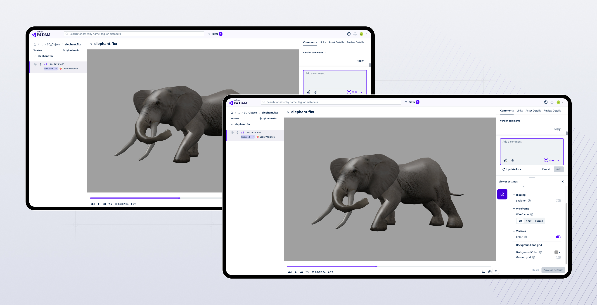

Problem statement
Users could review models in the browser, but the viewer did not always show the work clearly enough. Poor lighting made it harder to judge quality. Reviewers sometimes had to download files and open specialist software just to see them properly.
If users cannot trust the built-in viewer to show their work properly, they will review it somewhere else.
The feature needed to improve confidence without making the product feel more complex. The main issues were:
- Flat grey background
- Limited lighting
- Harder to judge materials and detail
The process
Turning meetings into requirements
I used AI-supported tools to turn early project conversations into notes, requirements, and developer tickets. This gave design, product, and engineering a shared starting point faster.
Prototyping directly in the product
I started with a simple wireframe, then used Claude Code to help create a working prototype in the real codebase. This was important because a static design could show the controls, but not whether the lighting actually improved the review experience.
Keeping the review loop small
I kept the team focused:
- one designer
- one developer
- one product manager
We reviewed the working prototype together, made decisions faster, and reduced handoff friction.
What changed
Realistic lighting presets
I added ready-made lighting options, including studio-style and outdoor-style presets.
A simpler settings experience
I added two clear background modes: Colour for the existing simple background, and Image for realistic lighting environments.
Clearer language
I changed the label from Environment to Background and grid.
A better handoff to engineering
Instead of only sharing a design file, I handed over a short spec, visual snapshots, a working prototype branch, and behaviour notes.
Impact and results
- Better handovers: Developers had more than static screens. They could see the intended behaviour in context.
- Faster delivery: By the end of the quarter, I had delivered 20% more features through the new workflows I built.
- Better collaboration: Product, design, and engineering reviewed the feature earlier and made decisions around the real experience.
- Practical use of AI: AI helped with the slower parts of the process: notes, requirements, prototyping, and handoff. The value was simple: less translation between tools, more time improving the product.
Driving innovation
This project showed how AI can support product delivery when it is used in practical, focused ways. It helped the team move from idea to working product faster, while keeping the focus on the user problem. The next step is to make this workflow easier for other teams to adopt through clearer specs, reusable prompts, and stronger handoff templates.
Less time translating work between tools. More time getting useful product into users’ hands.